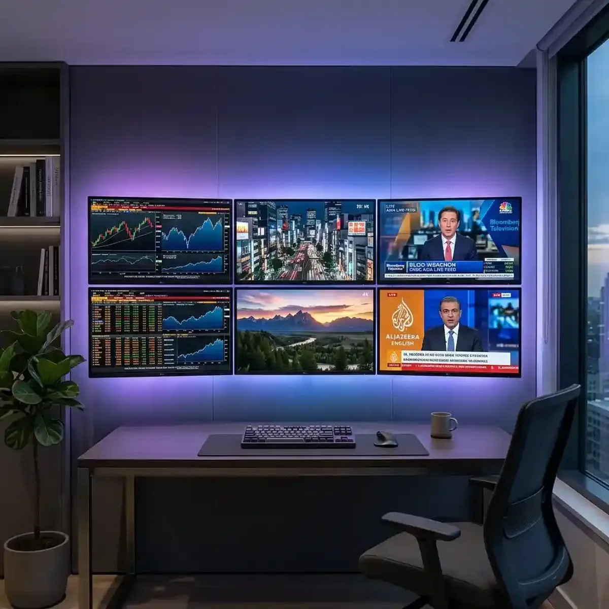

Building a Professional Video Wall for Your Home Office: A Guide

In today's fast-paced digital landscape, the concept of a "Home Office" has evolved from a simple desk and laptop into a high-performance "Workspace" where total digital situational awareness is the standard.
We are no longer working in isolation. The modern hybrid professional—whether they are a market analyst, a competitive gamer, or a data-driven strategist—requires a visual environment that aligns with the sheer velocity of the global information economy. The "Video Wall" has emerged as the most efficient way to achieve this alignment, but its effectiveness depends entirely on the design principles used to construct it. A poorly designed wall is a source of chaos; a psychologically optimized wall is a source of high-performance intelligence. This deep-dive guide explores the core principles of designing the ultimate home office video wall and examines how you can transform your workspace into a mission-controlled dashboard for the 2026 era. Success today is about the clarity of your visual real estate.
Selecting Your Display Hardware: 4K, Ultra-Wide, and Seamless Multi-Monitor Arrays
The foundation of any high-performance video wall is the "Display Hardware." Today, the goal is "Resolution and Real Estate." To monitor dozens of simultaneous high-definition streams effectively, you require pixel density that allows for clarity even in small tiles. A standard 1080p array is officially obsolete; modern professionals are moving toward 4K and 8K primary displays, often flanked by ultra-wide secondary monitors that provide an immersive 360-degree field of view. The more pixels you have, the more intelligence you can host.
When selecting your monitors, focus on "Unified Color Accuracy" and "Minimal Bezels." If your monitors have different visual profiles or thick physical gaps between them, your brain will struggle to build a cohesive "Visual Map." Seamless monitor arrays—where the displays are mounted with sub-millimeter precision—reduce the mental effort of "Switch and Scan." Additionally, ensuring your monitors have high refresh rates (120Hz or higher) and low input lag is critical for maintaining zero-stutter playback across multiple tiles. Your hardware selection is the first pillar of your truth. Total multitasking efficiency is a byproduct of pure technical stability.
The Ergonomics of Information: Focal Distance, Lighting, and Visual Comfort
A video wall is useless if it causes physical fatigue. The "Ergonomics of Information" involves designing a layout that supports long-term focus while protecting your physical health. The most critical factor is "Focal Distance." Your monitors should be positioned at a consistent distance from your eyes (usually between 24 and 36 inches) to avoid the constant need for "Refocusing" (accommodation). A multi-screen setup where some monitors are closer than others will lead to rapid eye strain and a decline in decision-making quality.
Think about your "Ambient Lighting." In a 2026 home office, the wall itself is a massive source of light. To minimize glare and maintain high-contrast clarity, use indirect, high-CRI (Color Rendering Index) bias lighting behind your monitors. This reduces the strain on your eyes by providing a soft "Visual Halo" that balances the intense glow of the screens. Ergonomics is the foundation of high-performance cognition. If you are physically uncomfortable, your multitasking efficiency will suffer. A psychologically optimized dashboard isn't just a collection of streams; it’s a "Curated Intelligent Space" that respects your biology. Success today is about the architecture of your attention.
Organizing Your Digital Dashboard: Strategic Tiling for Maximum Context
Designing your physical wall is only half the battle; the second half is "Digital Organization." Today, we utilize sophisticated monitoring software (like YoutubeMulti) to spatially map our diverse information sources into functional "Strategic Zones." This is the core of modern multitasking. By dedicating specific regions of your video wall to specific types of intelligence, you build "Spatial Memory"—allowing you to "check status" with a sub-second eye-flick, rather than a full mental recalibration.
To optimize this hierarchy, dedicate your largest, central monitor to your "Primary Focus"—the deep-work task or high-priority live stream that requires your absolute attention. Use your peripheral ultra-wide monitors for your "Ambient Radars"—live news updates, social sentiment dashboards, and technical analysis (TA) charts. By maintaining a consistent "Tile Map," you ensure that you are always at the center of the intelligence curve. A 100-video grid isn't about watching 100 things; it’s about having 100 radars working for your specific objectives. In the world of real-time monitoring, your "Dashboard Design" is your "Thinking Architecture."
Cable Management and Power Stability: Building the Infrastructure of Success
A high-performance video wall requires a robust "Technical Infrastructure." When you are running 4 or more high-resolution monitors, along with high-spec GPUs and audio interfaces, cable management and power stability become critical. Today, we don't just "plug things in"; we build a "Reliable Power Grid." A sudden power surge or a loose cable can destroy your real-time multitasking efficiency during a critical market event. A professional wall must be as resilient as the intelligence it hosts.
Use high-quality, shielded cables (HDMI 2.1 or DisplayPort 2.0) to ensure zero-latency data transmission. Additionally, invest in a "Pure Sine Wave" Uninterruptible Power Supply (UPS) that can provide at least 30 minutes of runtime for your entire wall. This ensures that even during a local power failure, your dashboard stays alive, allowing you to execute any critical "Exit Strategies" if you are a market monitor in Poland or elsewhere. Infrastructure is the silent protector of your productivity workflow. Total multitasking efficiency is the only path to high-stakes victory. The era of total semantic awareness starts with a stable grid.
Future Outlook: Modular Micro-LED Walls and Integrated Smart-Home Dashboards
As we look toward 2027 and beyond, the future of the home office is "Modular." We are moving away from individual monitors and toward "Micro-LED Video Walls"—where the entire surface of an office wall is a high-resolution, seamless display that can be dynamically partitioned into any number of tiles. Future walls will likely include built-in "AI-Driven Focal Adjustment," real-time "Narrative Heat-Maps," and seamless integration with global smart-home ecosystems. YoutubeMulti is already providing the foundation for this high-tech future, allowing you to build your own bespoke "Strategic Intelligence Grid" today.
A 4-Step Technical Walkthrough for Configuring Your YoutubeMulti Ops Center
For the professional analyst or creator, having efficient multitasking of their monitoring tools is non-negotiable. Using YoutubeMulti to build an "Operations Control center" on your video wall allows you to:
- Define Your Focal Zone: Use our drag-and-drop interface to position your primary data source in the center of your highest-resolution monitor.
- Deploy Your Ambient Radars: Build custom clusters of tiles for your side monitors, focusing on live sentiment, technical stats, and competitor monitoring.
- Calibrate Your Sync: Use our unified controls to resync all streams across all monitors with a single click, eliminating network-induced "Temporal Drift."
- Monitor Your System Health: Keep an eye on our built-in GPU/CPU load indicators to ensure your multi-monitor array remains in the "Zero-Stutter zone" during high-velocity events.
Conclusion: Final Thoughts on the Home-Office Evolution
The world of information consumption is a rewarding but demanding landscape of data, sentiment, and design. It is no longer enough to just "be busy"—you must "be informed" at the speed of the market. By utilizing advanced workspace design principles and professional tools like YoutubeMulti, you can ensure that you are always at the center of the intelligence curve. Don't just work—monitor, analyze, and build your productivity workflow in the multi-stream future. The era of efficient multitasking has arrived.